一文读懂AI编程助手的“系统提示词”
原文：https://mp.weixin.qq.com/s?__biz=MzAwMzIzOTk5OQ==&mid=2247537573&idx=2&sn=ab42dd0acff8dd519bfd1c11df0d22e0&chksm=9b3c2af5ac4ba3e3efd3455bf285a6e01b488996065a151bb9cd0dee509efa8ef8651da0ec40#rd 合集：AI时代，不用就会被淘汰
写在前面
现在的生信领域没AI已经完全无法干活了。西柚云结合大家对AI编程以及日常运行任务时的实际需求，推出了AI无缝接入Rstudio≈言出法随帮助大家做到在Rstudio中直接调用AI进行对话、代码修改、代码注释，结合分析环境（足够支持你完成硕博生涯的共享服务器）。几乎能做到数据分析的言出法随，反馈的代码直接就能在Rstudio里跑。
还通过Codex插件实现AI辅助编程，实现覆盖本地与远程 两种使用场景，提升科研工作效率。此外，我们还推出openClaw+服务器+微信接入=拥有私人生信助理，可实现在服务器上部署专属OpenClaw。
今天为大家分享：如何设置全局系统提示词——让AI记住你的偏好，无需每次重复交代。使用过程中有任何问题欢迎联系：
 可免费接入小龙虾和其它AI的服务器，可参考：访问链接：https://biomamba.xiyoucloud.net/
可免费接入小龙虾和其它AI的服务器，可参考：访问链接：https://biomamba.xiyoucloud.net/

系统提示词：AI的入职手册
系统提示词是给AI的“入职手册”——把编码风格、工作规范、个人偏好写成文件，让AI永久记住，无需每次重复交代。Claude用CLAUDE.md和Memory，Codex用AGENTS.md，本质都是这个作用。
这两个文件都是系统提示词配置文件，作用是给AI设定固定的“行为规则”和“工作偏好”。
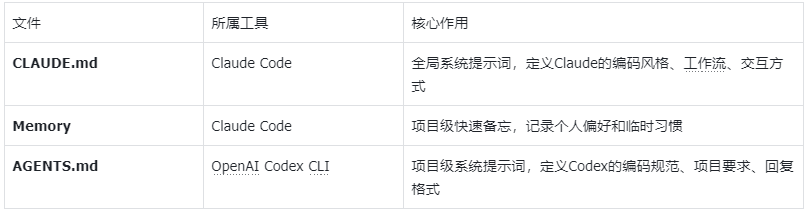

Claude Code记忆体系
Claude实际上有两套“记忆”机制，分工不同：
关键区别：# 是Memory系统的触发符。加 # 快速记个人偏好，不加 # 更新正式规范。
CLAUDE.md
| Claude使用CLAUDE.md文件作为系统提示词，支持多级配置：层级 | 位置 | 作用 |
|---|---|---|
| 用户级 | ~/.claude/CLAUDE.md |
个人编码偏好，跨项目生效 |
| 项目级 | ./CLAUDE.md |
团队共享的项目规范 |
| 本地级 | ./CLAUDE.local.md |
个人项目专属，不共享 |
| 目录级 | ./src/CLAUDE.md |
子目录特定规则 |
加载优先级：越具体的层级越优先
生效顺序（从基础到优先）：用户级 ~/.claude/CLAUDE.md ↓项目级 ./CLAUDE.md → ./CLAUDE.local.md ↓子目录级 ./src/CLAUDE.md → ./src/CLAUDE.local.md
1️⃣CLAUDE.md示例
# 生信分析规范## 代码风格- Python脚本使用4空格缩进- 变量名用小写下划线(如'gene_count')- 函数必须添加docstring说明参数和返回值## 数据处理- 原始数据务必保留备份- 中间结果输出到'tmp/'目录- 最终结果输出到'results/'目录并记录版本## 常用工具- 序列处理：seqtk, seqkit- 比对：STAR, minimap2- 定量：featureCounts, Salmon## 交互规范- 分析前确认基因组版本（hg38/hg19/mm10）- 重要操作前告知可能的风险
2️⃣验证CLAUDE.md生效
启动Claude Code，输入：
“我要分析一批RNA-seq数据，帮我写个比对脚本”
Claude没有直接写代码，而是先弹出交互式选项询问基因组版本，这正是我们在规范里要求的。界面上还能看到“测序类型”和“比对工具”的待确认项，说明它确实在按“重要操作前告知风险”的规矩来。等这些都选完，它会输出符合我们代码风格的脚本，比如4空格缩进、变量用小写下划线、函数带上docstring等细节。

3️⃣ 更新CLAUDE.md
输入：
“以后所有脚本都要记录运行时间，把这个写入CLAUDE.md”
Claude会读取现有文件并询问是否确定添加和更新，执行Yes确认后会自动追加新规范
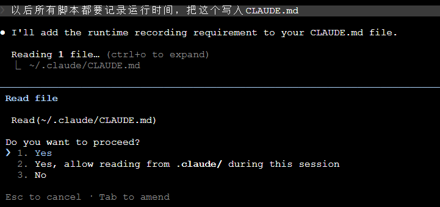

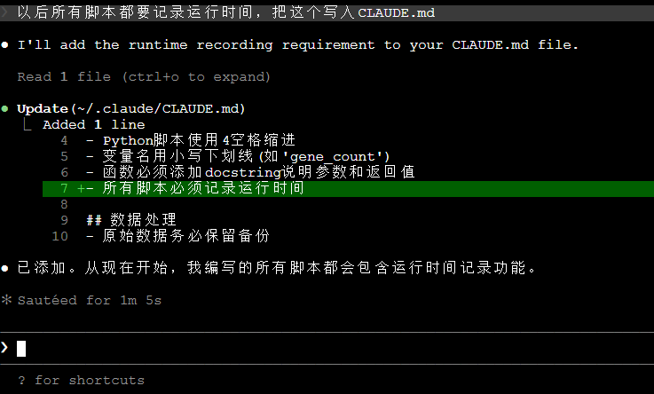
确认后可以看到CLAUDE.md文件已有新添加内容
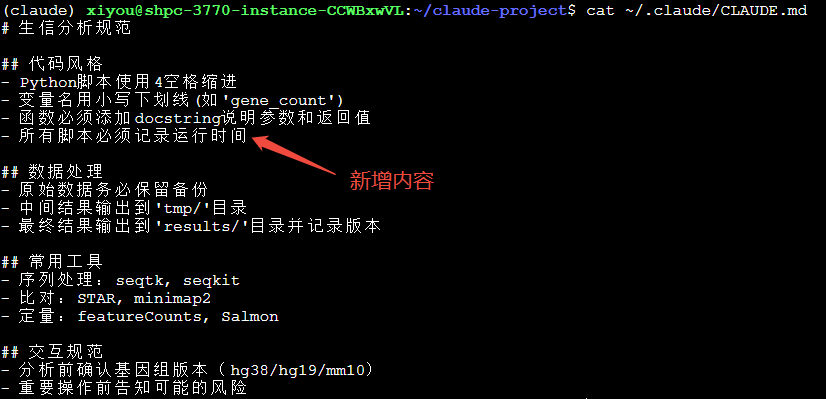
Memory
1️⃣ 什么是Memory
除了正式的CLAUDE.md，Claude还提供了一个更轻量的记忆机制——Memory系统。你可以把它理解为你的“私人备忘录”：不需要经过确认流程，不用考虑团队规范，快速记下那些“我喜欢这样处理”的个人偏好。
Memory保存在项目专属的目录中，每个项目独立：
~/.claude/projects/{project-name}/memory/├── MEMORY.md # 记忆索引，列出所有记忆├── fasta_preference.md # 具体记忆文件 1├── scrna_preference.md # 具体记忆文件 2└── ...
每个记忆文件采用YAML前置元数据+Markdown主体内容的标准格式：
---name: fasta-preferencedescription: FASTA文件处理的工具偏好type: feedback---# FASTA 处理偏好## 工具选择- 优先使用 `seqkit` 处理 FASTA 文件- 不再使用 `seqtk`## 常用命令- 统计序列数：`seqkit stats input.fa`- 提取长序列：`seqkit seq -m 1000 input.fa > output.fa`- 格式转换：`seqkit fq2fa input.fq.gz -o output.fa`
索引文件MEMORY.md会自动维护，方便快速浏览：
# Memory Index- [FASTA Preference](fasta-preference.md) - FASTA文件处理的工具偏好- [Plotting Style](plotting-style.md) - 绘图风格和配色方案
查看记忆：
cat ~/.claude/projects/{project}/memory/MEMORY.md
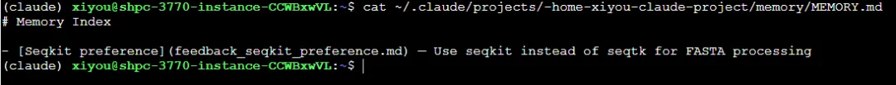
删除记忆：- 由于Memory设计为轻量级备忘，没有精细的管理界面，需要手动删除：
# 删除特定记忆文件rm ~/.claude/projects/{project}/memory/fasta-preference.md# 或清空整个记忆目录rm -rf ~/.claude/projects/{project}/memory/*
2️⃣ 什么时候用Memory
-
突然想到一个顺手的工具组合
-
发现某个参数设置特别适合你的数据
-
临时记住一个常用的分析流程
-
任何不想写进正式文档的小习惯
3️⃣ 如何使用Memory
方式一：# 前缀触发
只需在对话中以#开头：
# 以后处理fasta文件都用seqkit而不是seqtk
Claude会立即记录，没有确认对话框，不打断你的思路
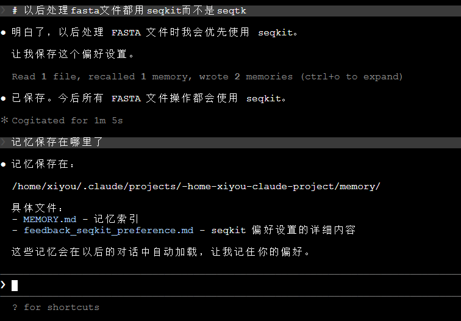
方式二：/memory指令
输入/memory可以查看和管理记忆系统：
-
查看Auto-memory状态（on/off）
-
查看User memory和Project memory的保存位置
-
打开auto-memory文件夹快速浏览（终端无图形化界面时不支持打开）
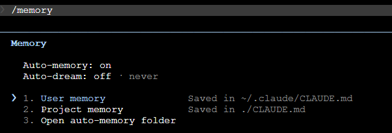
双机制对比
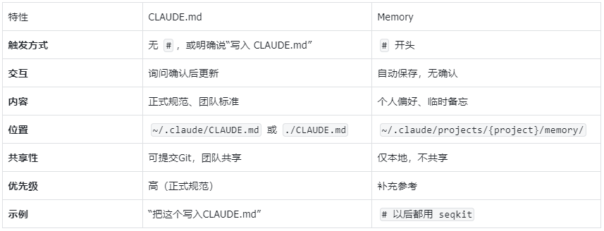
Codex记忆体系
什么是AGENTS.md？
Codex使用AGENTS.md作为系统提示词文件，作用与Claude的CLAUDE.md类似。Codex在开始任何工作前都会读取AGENTS.md，通过分层配置确保每个任务都按统一规范执行。它采用的分层设计可以简单理解为：越靠近你当前位置的配置，优先级越高
Codex启动时会构建一条“指令链”，从两个层面收集规则：
全局层面： ~/.codex/目录下的AGENTS.md，放你个人通用的习惯。如果临时想覆盖又不想删原文件，可以建一个AGENTS.override.md，Codex会优先读它。
项目层面： 从项目根目录一路向下找到你当前的工作目录，每层都可能有配置。Codex会把沿途找到的文件拼在一起，后出现的内容覆盖前面的。
所以实际优先级是：
当前目录 > 父目录 > 项目根目录 > 全局配置 > Codex默认
每个目录里，Codex先看有没有AGENTS.override.md，没有再找AGENTS.md。override文件适合临时调整，删掉就恢复原来的规则。
文件结构：
~/.codex/├── AGENTS.md # 全局个人指导├── config.toml # 模型、提供商等配置└── skills/ # 项目级Skill（可选）你的项目/├── AGENTS.md # 项目级规范（最优先）└── .codex/ └── AGENTS.md # 替代位置
AGENTS.md示例：
## 生信分析规范### 代码风格- Python 脚本使用 4 空格缩进- 变量名用小写下划线（如 `gene_count`）- 函数必须添加 docstring 说明参数和返回值### 数据处理- 原始数据务必保留备份- 中间结果输出到 `tmp/` 目录- 最终结果输出到 `results/` 目录### 常用工具- 序列处理：seqtk, seqkit- 比对：STAR, minimap2- 定量：featureCounts, Salmon### 交互规范- 分析前确认基因组版本（hg38/hg19/mm10）- 重要操作前告知可能的风险- 提供命令时解释关键参数含义
如何使用AGENTS.md
第一步：创建文件并粘贴保存规范（推荐项目级）
# 在项目目录创建（推荐）vim ~/codex-project/AGENTS.md# 或者全局配置vim ~/.codex/AGENTS.md
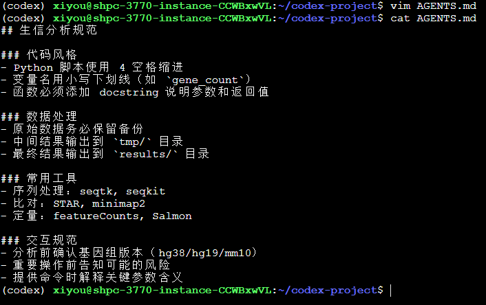
第二步：验证生效
启动Codex，输入：
“我要分析一批RNA-seq数据，帮我写个比对脚本”
Codex会根据加载的规范来执行，按照规范询问基因组版本、测序类型等必填参数，而不是直接开始写代码
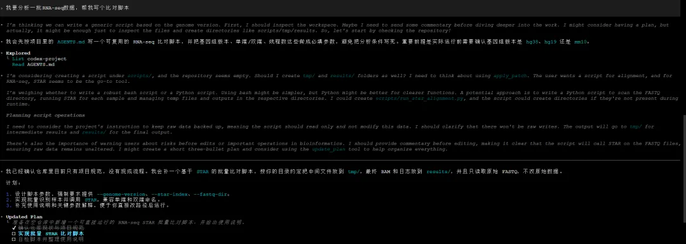
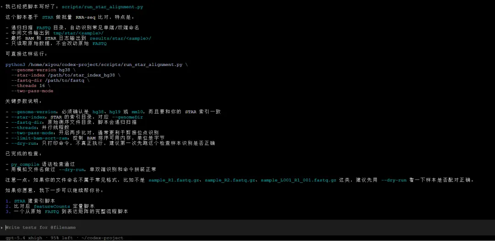
更新机制
Codex支持在对话中直接更新项目级的AGENTS.md：
“帮我在AGENTS.md里添加一条：比对后检查比对率和覆盖度”
Codex会读取当前AGENTS.md，在“质控要求”部分追加新规范，经确认后完成更新。
边界说明：
-
只能更新项目级AGENTS.md，不能覆盖系统或开发者层面的更高优先级指令
-
如果新增规则与现有规范冲突，Codex会指出冲突点，按可执行的方式处理
也可以手动编辑 vim AGENTS.md，实时生效。
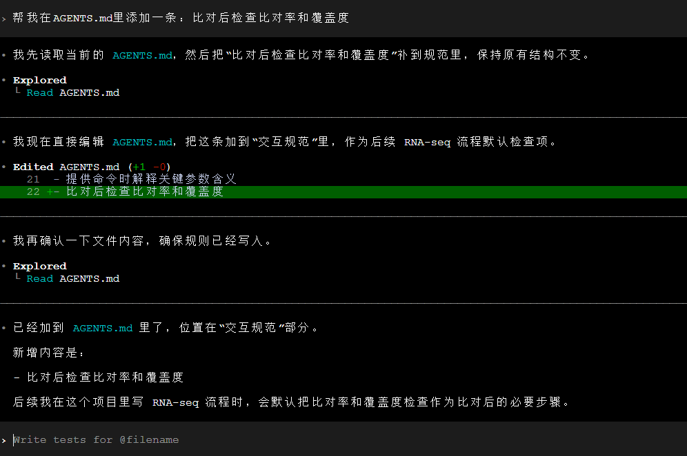
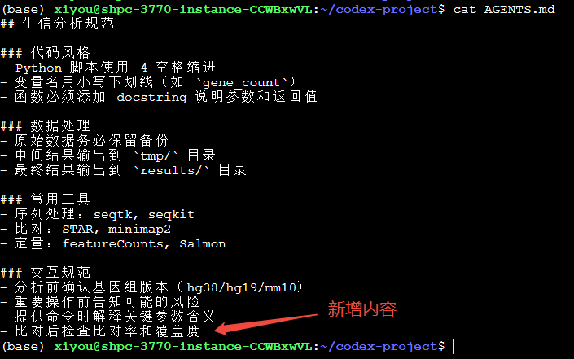

核心对比
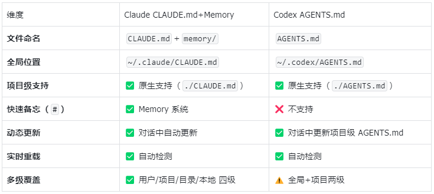

使用建议
Claude用户
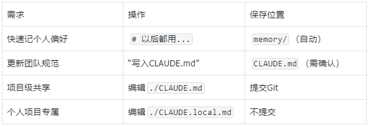
Codex用户
-
项目规范：创建项目级AGENTS.md（推荐）
-
全局配置：~/.codex/AGENTS.md（目前不生效，建议放~/AGENTS.md作为父目录继承）
-
快速切换：创建项目级Skill（./.codex/skills/）
-
动态更新：对话中直接让Codex修改AGENTS.md
-
注意：Codex没有Memory系统，临时偏好需要写入AGENTS.md或创建Skill
结语
无论是Claude的CLAUDE.md+Memory还是Codex的AGENTS.md，核心目标一致：让AI记住你的工作方式，给AI分配任务时，越具体AI完成得越好。
西柚云在售算力
我们长期提供GPU、CPU算力，欢迎大家联系客服微信[Biomamba_zhushou]优惠下单。


如何联系我们

 留一个领取资料、开箱即用的单细胞分析镜像的微信号[Biomamba_zhushou]，方便各位随时交流。同时我们也构建了交流群矩阵，欢迎大家入群讨论。
大家可以阅读完这几篇之后添加给生信入门初学者的小贴士没有检索，就没有发言权
留一个领取资料、开箱即用的单细胞分析镜像的微信号[Biomamba_zhushou]，方便各位随时交流。同时我们也构建了交流群矩阵，欢迎大家入群讨论。
大家可以阅读完这几篇之后添加给生信入门初学者的小贴士没有检索，就没有发言权
已有生信基地联系方式的同学无需重复添加

 您点的每个赞和在看，我都认真当成了喜欢
您点的每个赞和在看，我都认真当成了喜欢